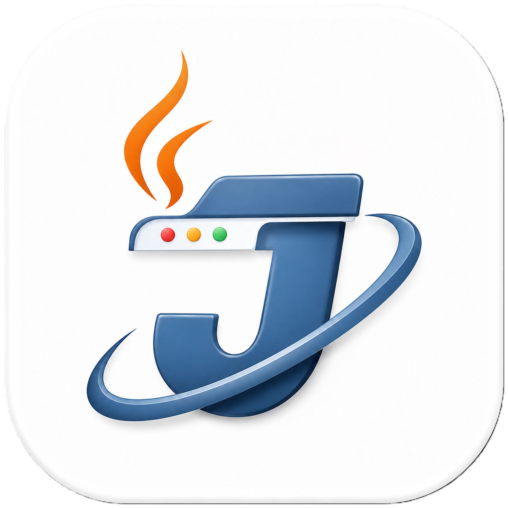

Если список не загрузился автоматически, посмотрите GitHub Releases.
| Версия | Дата | Файл | Размер | Платформа | Загрузить |
|---|---|---|---|---|---|
| ★ v1.0.0 | 04.08.2026 | JaviconBrowser-1.0.0.jar | 42.5 МБ | Все ОС | Скачать |
| v1.0.0 | 04.08.2026 | JaviconBrowser-1.0.0-windows.zip | 97.9 МБ | Windows | Скачать |
Примечание: каждый новый релиз автоматически появляется в таблице выше, а «Последняя версия» всегда указывает на самый свежий выпуск.
Javicon Browser - JAR (для любой версии) или EXE-сборку (Windows).java -version).java -jar JaviconBrowser-<версия>.jarJaviconBrowser.exe (Java уже внутри).jar-файл соответствующей версии.java -jar javicon-browser.jarmvn clean packageВсе релизы, сурсы и история версий на GitHub: